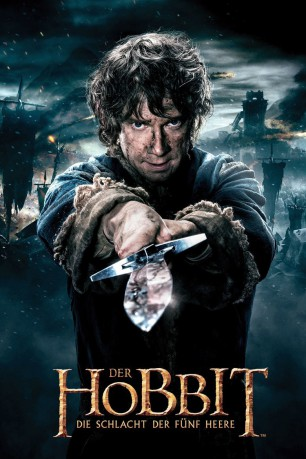

Alternativ: The Hobbit: The Battle of the Five Armies (Englischer Titel)
Auszeichnungen: für 1 Oscars nominiert gesehen am 01.11.2015
gesehen am 01.11.2015
 
 IMDB-Wertung: 7.4 / 10
IMDB-Wertung: 7.4 / 10  Metascore:
Metascore: 
Nachdem Smaug besiegt wurde, sitzt Thorin endlich auf dem Zwergenthron und hat sein Reich wieder. Doch der Kampf gegen den Drachen hat Spuren hinterlassen. Die Stadt Esgaroth wurde zerstört, ihre Bewohner sind nun obdachlos. Doch Thorin verweigert jede Hilfe genauso wie die Rückgabe von Teilen des Schatzes, die Smaug gestohlen hatte. Hobbit Bilbo versucht zwischen Zwergen, Elben und den Bürgern zu vermitteln, doch vergeblich. Thorin hält ihn für einen Verräter und auch Gandalf kann nichts mehr ausrichten. Es wird aufgerüstet und bald stehen sich die Armeen gegenüber…
Jahr: 2014
Dauer: 144 Minuten
FSK: 12
Land: Neuseeland Studio: Warner Bros.Tonspuren: DTS - ,
Untertitel: Deutsch,
Auflösung: 1080p (1920x1080) Größe: 12902 MB
Regisseur:  Peter Jackson
Peter Jackson
Drehbuch: Fran Walsh, Philippa Boyens, Peter Jackson, Guillermo del Toro, J.R.R. Tolkien
Soundtrack: Howard Shore
Darsteller:
Datei: X:\6-Hexalogie(A-Z)\Herr der Ringe - Hobbit\Hobbit 3 - Die Schlacht der fünf Heere (2014, FSK12, 1920x1080) 3D.mkv seit 09.03.2015
Festplatte: HD Collection-3(N-Z)-6(A-Z)
 Es gibt insgesamt 12 Filme in der Gruppe '6-Hexalogie(A-Z)\Herr der Ringe - Hobbit'
Es gibt insgesamt 12 Filme in der Gruppe '6-Hexalogie(A-Z)\Herr der Ringe - Hobbit'